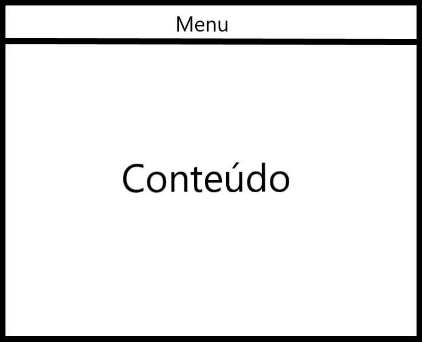
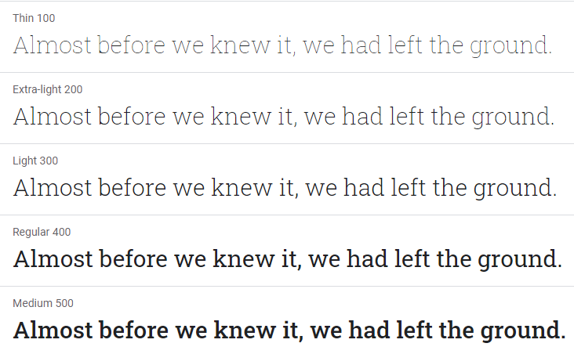
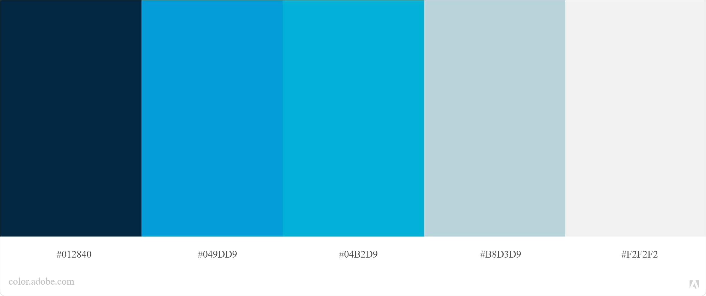
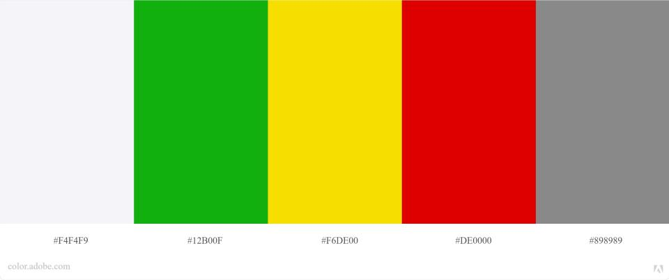

Metas de usabilidade
1. Introdução
1.1 Objetivo do Guia de Estilo
O guia de estilo tem como objetivo ser um guia para a equipe de design e de desenvolvedores, de forma que as equipes tenham uma orientação no momento de criação da interface do sistema, mantendo assim um padrão em seu design (Barbosa e Silva, 2010).
A partir disso, os protótipos do CD-MOJ utilizarão este documento, que contém a maioria dos padrões da proposta de uma nova interface do CD-MOJ, como guia para a criação da interface.
1.2 Organização e Conteúdo
O guia de estilo segue o padrão sugerido por Marcus e Mayhew sendo separado por seis tópicos.
1.3 Público-alvo
Este guia destina-se aos desenvolvedores e projetistas.
1.4 Como utilizar esse guia
A cada etapa dentro do ciclo de Mayhew deve-se aplicar o guia de estilo ao projeto.
1.5 Como manter o guia
O guia deve ser mantido atualizado após cada alteração e ou decisão acerca das funcionalidades do projeto.
2. Resultados de Análise
2.1 Descrição do ambiente de trabalho do usuário
O usuário encontra-se num ambiente voltado para a aprendizagem, deve-se prezar pelo foco do usuário ou seja, o usuário não pode se deparar com empecilhos e distrações, também prioriza uma navegação fluída.
3. Elementos de interface
3.1 Disposição espacial e grid
A disposição espacial do site deve ser responsiva de forma que qualquer usuário consiga utilizar o sistema em dispositivos com resoluções distintas.

3.2 Janela
O sistema não deve contar com muitas janelas dada a simplicidade e o contexto de uso da aplicação.
3.3 Tipografia
A fonte que será utilizada ao longo do projeto será a Roboto Slab, projetada por Christian Robertson.

3.4 Símbolos não tipográficos
Como atualmente o CD-MOJ não apresenta símbolos não tipográficos, fizemos uma seleção de possíveis símbolos que poderão ser usados levando em conta o contexto de uso da aplicação. Todos esses ícones são do Material Icons.
| Ícones | ||||
|---|---|---|---|---|
3.5 Cores
3.5.1 Cores principais
As cores principais escolhidas foram avaliadas em relação à acessibilidade para pessoas com os tipos mais comuns de daltonismo.
As cores principais escolhidas foram as seguintes:

3.5.2 Cores secundárias
As cores secundárias foram utilizadas para representação de status de informações do sistema.
As cores secundárias escolhidas foram as seguintes:

3.6 Animações
Tendo em vista que o sistema tem um escopo simples, não tem necessidade de animações complexas de mesmo modo, animações simples podem ser utilizadas.
4. Elementos de interação
4.1 Estilos de interação
O usuário terá a possibilidade de navegação através de botões de icones selecionáveis nos elementos não tipograficos
4.2 Seleção de um estilo
Foi escolhido um estilo simples levando em consideração a simplicidade do escopo do sistema.
4.3 Aceleradores
Levando em consideração o contexto da aplicação e suas funções, não há necessidade de possuir aceleradores.
5. Elementos de ação
5.1 Preenchimento de campos
O campo de login é o único campo presente no sistema e deve ser preenchido pelo próprio usuário.
5.2 Seleção
O usuário pode selecionar qualquer texto ou elemento no site.
5.3 Ativação
A questão da ativação no sistema será direcionada a partir de fundamentos de usabilidade, possibilitando a liberdade do usuário quando dentro do site.
6. Vocabulários e padrões
6.1 Terminologia
O site faz uso de uma terminologia utilizada também no contexto de competições de programação, deve-se prezar também pelo ensinamento dos termos para novos usuários.
6.2 Tipos de Tela
As telas se diferenciam em: tela de listagem dos contests, tela principal do contest, tela do ranqueamento, tela de visualização das questões, sendo esta bem mais informativa que as outras, tela de estatísticas.
6.3 Sequências de diálogos
Deve existir uma confirmação quando o usuário fizer login e também quando ocorrer algum erro nesse processo.
Referências Bibliográficas
- BARBOSA, Simone; SILVA, Bruno. "Interação Humano-Computador". Elsevier Editora Ltda, 2010.
- Adobe Color, disponível em: https://color.adobe.com/pt/create/color-wheel Acesso em: 11/10/2020
- Google Fonts, disponível em: https://fonts.google.com/ Acesso em: 11/10/2020
Versionamento
| Versão | Data | Modificação | Autor |
|---|---|---|---|
| 1.0 | 11/10/2020 | Criação do documento de guia de estilo | Todos os integrantes |
| 1.1 | 12/10/2020 | Correções gramaticais e nos links das imagens | Igor Paiva |
| 2.0 | 15/10/2020 | Refatorando estrutura geral do projeto | Marcelo Victor, Rhuan Carlos, Thiago Lopes e Thiago Guilherme |
| 3.0 | 06/12/2020 | Atualizando guia de estilo | Igor Paiva e Thiago Lopes |